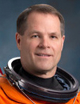

Lyndon B. Johnson Space Center
Houston, Texas 77058
|
National Aeronautics and Space Administration Lyndon B. Johnson Space Center Houston, Texas 77058 |
 |
Biographical Data |
||
Kevin A. Ford (Colonel, U.S. AIR FORCE, Ret.)
NASA Astronaut
PERSONAL DATA: Born July 7, 1960 in Portland, Indiana. Montpelier, Indiana, is his hometown.
EDUCATION: Graduated from Blackford High School, Hartford City, Indiana, in 1978. He received his Bachelor of Science in Aerospace Engineering from the University of Notre Dame in 1982, a Master of Science in International Relations from Troy State University in 1989, a Master of Science in Aerospace Engineering from the University of Florida in 1994, and a Ph.D. in Astronautical Engineering from the Air Force Institute of Technology in 1997. Graduate of Squadron Officer School, the Air Command and Staff College Associate Program and Air War College.
EXPERIENCE: Commissioned through the Reserve Officer Training Corps program in 1982 and completed primary Air Force jet training at Columbus Air Force Base, Mississippi, in 1984. Trained in the F-15 Eagle and was assigned to the 22nd Tactical Fighter Squadron, Bitburg Air Base, Germany, from 1984 to 1987, and then to the 57th Fighter Interceptor Squadron at Keflavik Naval Air Station, Iceland, until 1989. Student at the United States Air Force Test Pilot School, Edwards Air Force Base, California, 1990. Ford flew flight test missions in the F-16 Fighting Falcon at Eglin Air Force Base, Florida, from 1991 to 1994. Test experience at Eglin included multiple F-16 flutter missions, development of the ALE-47 Countermeasures Dispenser System, and multiple safe separation, ballistics, and air-to-air missile development testing, including the first AMRAAM shot from the F-16 Air Defense Fighter variant. Served as Director of Plans and Programs, as well as a flight and academic instructor at the Air Force Test Pilot School, 1997-2000. Retired from active duty military service in June 2008. Ford has over 4900 flying hours and holds FAA instructor ratings for airplanes and gliders, a commercial rating for helicopters, and a private rating for hot air balloons.
NASA EXPERIENCE: Ford reported for duty to NASA JSC in August 2000. After completing two years of astronaut candidate training in 2002, he was assigned technical duties in the Astronaut Office at the Johnson Space Center. He worked advanced exploration issues and the development and testing of the Shuttle Cockpit Avionics Upgrade. He served as Director of Operations at the Gagarin Cosmonaut Training Center in Star City, Russia, from January to December of 2004. From January 2005 until July of 2008, Ford served as a space shuttle and International Space Station Capsule Communicator (CAPCOM) in the Mission Control Center, working shuttle missions STS-115, STS-116, STS-117, STS-120, STS-122 and STS-123, as well as International Space Station expeditionary stage operations.
SPACE FLIGHT EXPERIENCE: Ford served as pilot for space shuttle mission STS-128 to the International Space Station (Construction Mission 17A), which launched on August 28, 2009 from the Kennedy Space Center and landed on September 11, 2009 at Edwards Air Force Base, California. The space shuttle Discovery carried the Multi-Purpose Logistics Module “Leonardo” filled with 15,000 pounds of science and storage racks to the space station, delivered a new Ammonia Tank Assembly. STS-128 returned the depleted tank, the EuTEF and MISSE experiments, and exchanged Expedition crew members. Discovery and her crew completed 219 Earth orbits in 13 days, 21 hours. Ford launched aboard Soyuz TMA-06M “Kazbek” as flight engineer 2 on October 23, 2012 from the Baikonur Cosmodrome, Kazakhstan. After docking with the station on October 25, Ford served as flight engineer for Expedition 33, and then on November 17, assumed duties as commander of Expedition 34. Kazbek landed safely in Kazakhstan on March 16, 2013, having completed 2233 Earth orbits in 143 days, 16 hours.
AUGUST 2014